有关 Google Gemini 3 的一切
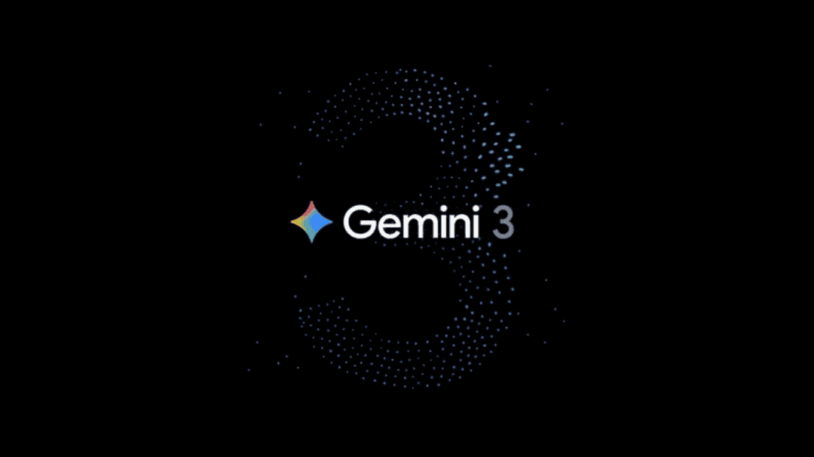
概览
- Google Gemini 3 来啦！ #1
- AI Studio 免费，但 API 不免费 #2
- 上线之余，Gemini 应用迎来重大更新 #3
- AI IDE 发布并限免：Google Antigravity #4
- Gemini CLI：付费API、AI Ultra或排队 #5
- 第三方平台均已上线 #6
Google Gemini 3 来啦！ #1
谷歌正式发布其迄今最智能的AI模型系列 Gemini 3，包含性能顶尖的 Gemini 3 Pro 和即将推出的 Gemini 3 Deep Think 模式，并已在 AI Studio 和 Gemini 应用等全面上线。
Gemini 3 Pro 在多项 AI 基准测试中展现了顶尖性能，具备先进的推理、多模态理解、agentic coding 和 vibe coding 能力。此次发布伴随着一系列产品更新，包括将 Gemini 3 集成至谷歌搜索（AI Mode）和 Gemini app，并推出全新的 agentic 开发平台 Google Antigravity。
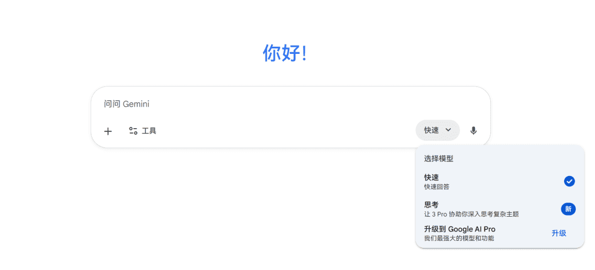
谷歌 CEO Sundar Pichai 指出，Gemini 3 是公司迄今最智能的模型，它结合了前代产品在原生多模态、长上下文和 agentic 能力方面的突破，并进一步提升了推理的深度与细微之处的理解能力。Google DeepMind 的 CEO Demis Hassabis 表示，Gemini 3 的发布是通向 AGI 道路上的又一重要步骤。
Gemini 3 Pro 在多个 AI 基准测试中表现出色：
- LMArena Leaderboard 得分达到 1501 Elo，位居榜首
- Humanity's Last Exam 中得分为 37.5%
- GPQA Diamond 中为 91.9%
- MathArena Apex 中达到 23.4%
- 多模态方面，MMMU-Pro 和 Video-MMMU 上分别获得 81% 和 87.6%
- 编码能力方面，WebDev Arena 以 1487 Elo 位居第一
- Terminal-Bench 2.0 得分 54.2%
- SWE-bench Verified 上获得 76.2%
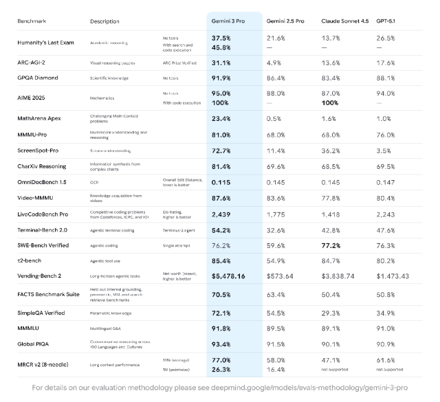
为进一步提升性能，谷歌还预告了 Gemini 3 Deep Think 模式，该模式在内部测试中于 Humanity's Last Exam 和 GPQA Diamond 上取得了更高的分数，并在 ARC-AGI-2 测试中达到 45.1%。Deep Think 模式将在完成额外的安全评估后，首先向 Google AI Ultra 订阅者开放。
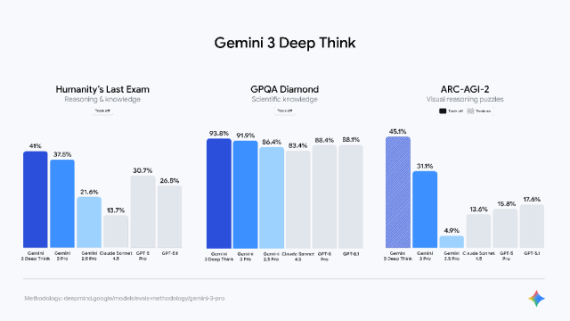
AI Studio 免费，但 API 不免费 #2
Gemini 3 Pro 现已通过API向开发者开放，引入了 thinking level 和 media resolution 等新参数，并提供了详细的定价、迁移指南和最佳实践。
开发者可以在 Google AI Studio 中免费试用该模型，但目前 Gemini API 中没有 gemini-3-pro-preview 的免费层级。
API 定价
| 提示长度 | 输入价格 (每百万 tokens) | 输出价格 (每百万 tokens) |
|---|---|---|
| ≤ 200k tokens | 2 美元 | 12 美元 |
| > 200k tokens | 4 美元 | 18 美元 |
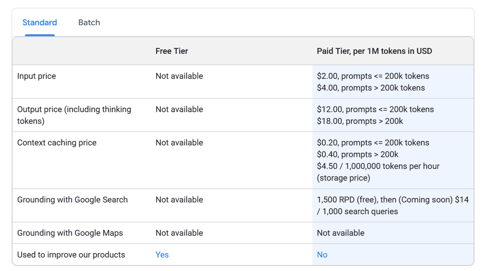
Thinking Level 参数
| Thinking Level | 描述 |
|---|---|
low | 最小化延迟和成本，适合简单指令跟随、聊天或高吞吐量应用。 |
medium | 即将推出，在发布时暂不受支持。 |
high | (默认) 最大化推理深度，首个 token 的响应时间可能显著延长，但输出经过更仔细的推理。 |
Media Resolution 参数
| 媒体类型 | 推荐分辨率 | 最大 Tokens | 适用场景 |
|---|---|---|---|
| 图像 | media_resolution_high | 1120 | 确保大多数图像分析任务的最高质量。 |
| PDF 文档 | media_resolution_medium | 560 | 最适合文档理解，质量通常在此级别达到饱和。 |
| 普通视频 | media_resolution_low 或 medium | 70/帧 | 足以应对大多数动作识别和描述任务。 |
| 文本密集视频 | media_resolution_high | 280/帧 | 用于读取密集文本（OCR）或视频帧内的微小细节。 |
Gemini 3 强烈建议将 temperature 参数保持默认值 1.0。更改此值可能导致在复杂数学或推理任务中出现循环或性能下降等意外行为。
Gemini 应用迎来重大更新 #3
谷歌在Gemini应用中集成了全新的 Gemini 3 模型，为用户带来了更智能的推理、实验性的生成式界面以及能够处理多步骤复杂任务的 Gemini Agent 功能。
Gemini 3 采用最先进推理技术，响应更实用、格式更优、更简洁。它是最佳 vibe coding 模型，在 Canvas 中构建的应用功能更完整。它也是全球最佳多模态理解模型，可处理作业照片或讲座笔记转录。
Gemini 3 Pro 今日起全球推出，用户需从模型选择器中选择"Thinking"模式。Google AI Plus、Pro 和 Ultra 订阅者享有更高使用限额。谷歌将向美国大学生免费提供一年 Google AI Pro 服务，包含 Gemini 3 访问权限。
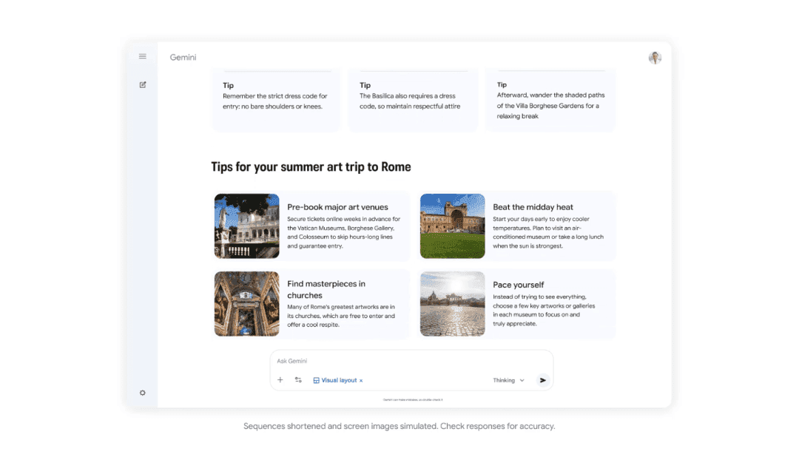
生成式界面新能力
- 视觉布局：生成沉浸式杂志风格视图，包含照片和可交互模块
- 动态视图：利用 Gemini 3 的 agentic coding 能力实时设计和编码定制用户界面，提供可点击、滚动的交互式体验
Gemini Agent
Gemini Agent 是一项实验性功能，在 Gemini 内部直接处理多步骤复杂任务。它可连接 谷歌 应用管理日历、添加提醒，或执行"整理收件箱"等指令。
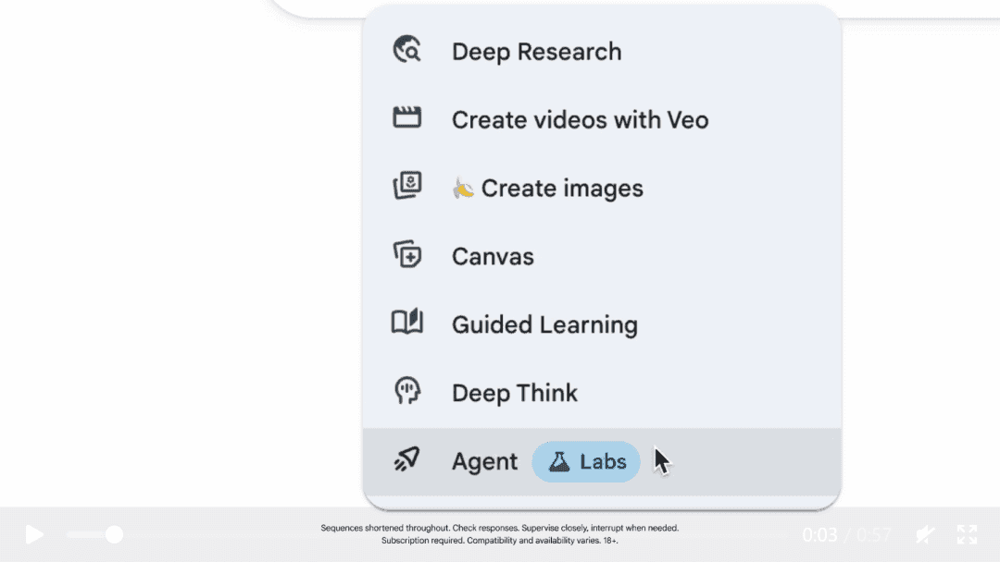
该功能基于 Project Mariner 洞察构建，由 Gemini 3 高级推理能力驱动，使用 Deep Research、Canvas、Gmail、Calendar 等 Google Workspace 应用及实时网页浏览工具。Gemini Agent 今日在美国网页版向 Google AI Ultra 订阅者推出。
AI IDE 上线并限免：Google Antigravity #4
谷歌推出了全新的 agentic 开发平台 Google Antigravity，该平台提供以 agent 为先的 IDE 体验，支持自主规划和执行复杂的端到端软件任务，并已向公众开放预览。
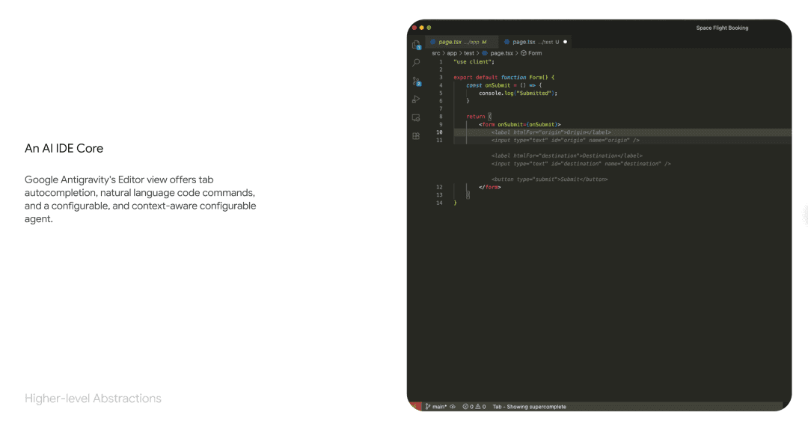
Antigravity 的公共预览版现已支持 MacOS、Windows 和 Linux。除了 Gemini 3 Pro，它还集成了用于浏览器控制的 Gemini 2.5 Computer Use 模型和图像编辑模型 Nano Banana。
核心特性
- Editor 界面：类 IDE 体验
- Manager 界面：agent 优先的任务控制中心，可生成、编排和观察跨多个工作区的多个 agent 并行工作
- 支持 Gemini 3 Pro、Anthropic Claude Sonnet 4.5 和 OpenAI GPT-OSS 模型
- 无限 Tab 补全和无限命令请求功能
- 速率限制每五小时刷新一次
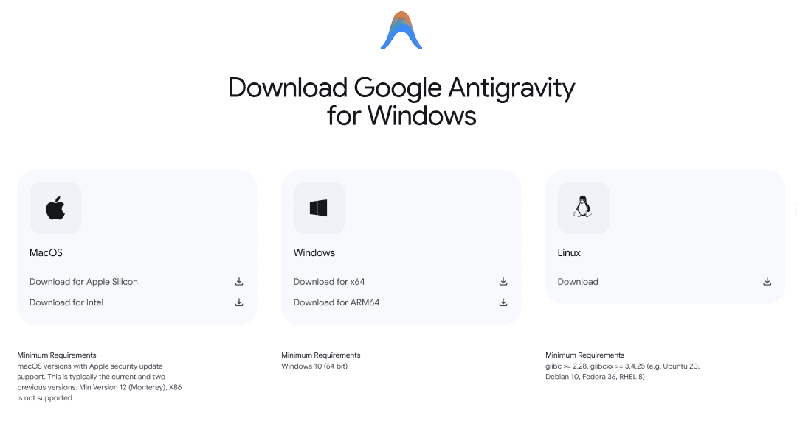
Gemini CLI：付费API、AI Ultra或排队 #5
Google 已将强大的 Gemini 3 Pro 模型集成到其命令行工具 Gemini CLI 中，为开发者带来顶尖的推理、编码及工具调用能力，并已面向部分付费用户开放。
目前，Google AI Ultra 订阅者以及持有付费 Gemini API 密钥的用户可立即使用。其他用户群体，包括 Google AI Pro、Gemini Code Assist Standard 以及免费层级用户，可通过专用表单加入等待名单以获取后续访问权限。
启用流程
| 步骤 | 操作 |
|---|---|
| 1. 安装/更新 | 执行命令 npm install -g @google/gemini-cli@latest 安装最新版本（0.16.x）。 |
| 2. 开启预览 | 运行 /settings 指令，并将 Preview features 切换为 true 状态。 |
| 3. 重启并验证 | 重启CLI后，系统将默认使用 Gemini 3 Pro。可通过 /model 指令手动切换，或通过 /stats 指令验证当前模型。 |
| 4. 额度回退 | 若当日调用额度耗尽，系统将自动回退至 Gemini 2.5 Pro 模型。 |
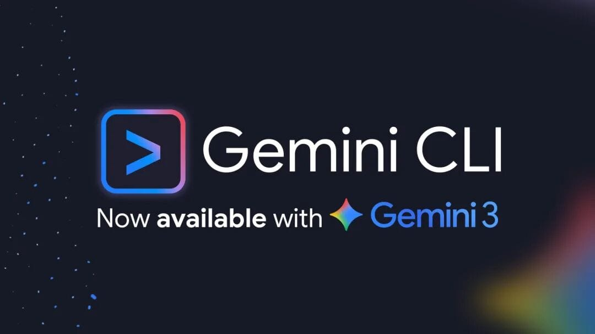
第三方平台均已上线 #6
Gemini 3 Pro 获得了广泛的生态系统支持，已集成到 GitHub Copilot 和 JetBrains IDEs 等多个第三方平台，同时其安全性能也得到全面提升，成为谷歌迄今最安全的模型。
支持 Gemini 3 Pro 的平台包括：
- GitHub Copilot（公开预览）
- JetBrains IDEs（AI Chat 和 Junie）
- Cursor
- Manus
- Cline
- Replit
- Kilo code
- flowith
- Genspark
- OpenRouter
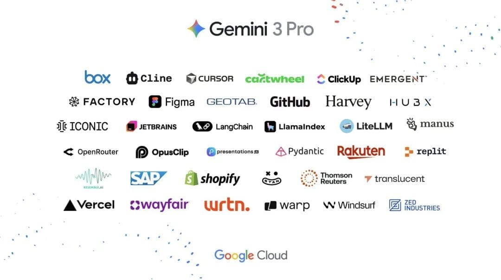
在安全方面，Gemini 3 被认为是 谷歌 迄今最安全的模型，经过了全面的安全评估，显示出更少的谄媚性、更强的抗提示注入能力，并改进了对网络攻击等滥用行为的防护。